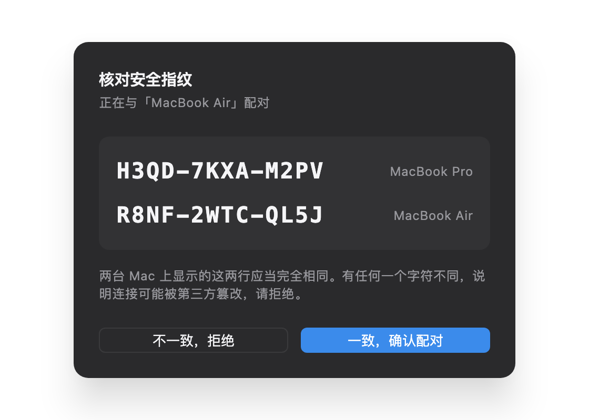
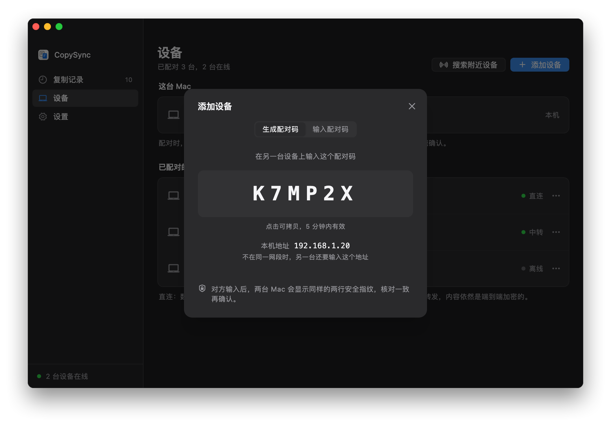
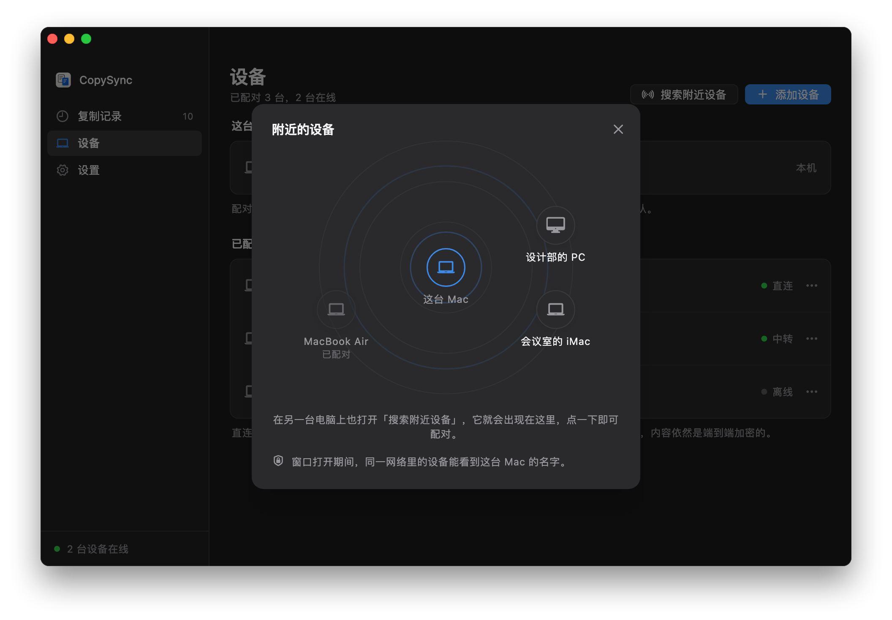
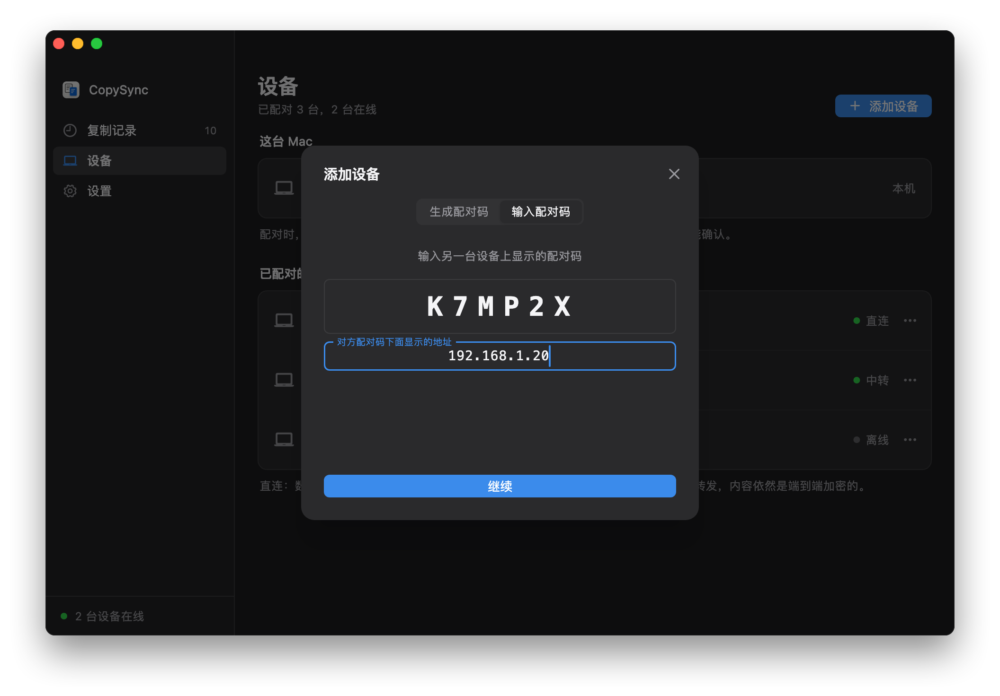

不需要服务器
同一个网络里的两台电脑，靠 mDNS 互相发现、直接交换连接信息，然后建立加密的直连。没有服务器，也不需要一台一直开着的电脑。
- 自动发现。每台电脑用 mDNS 在局域网里广播自己，广播里只有一个每天都变的匿名标识，看不出是谁的电脑。打开「搜索附近设备」时才带上设备名，关掉就撤下。
- 直连。复制的内容在两台电脑之间直接传输，速度就是局域网的速度。
- 安全照旧。配对时核对两行安全指纹，之后的每条消息都带签名，同一网络里的其他人冒充不了你的设备。
开始之前
- 在同一个网络里
- 两台电脑连着同一个路由器就行，Wi‑Fi 与有线混用也可以。访客网络、开了「AP 隔离」的 Wi‑Fi 不让设备互相访问；公司里有线和无线常常不在一个网段，这时看下面的不在同一网段。
- Windows 防火墙
- 第一次运行时，Windows 会问是否允许隔空贴通过防火墙，选允许。点过取消的话，在隔空贴的「设置 → 局域网」里点「放行」，会请求一次管理员权限。
- macOS 的本地网络权限
- macOS 15 起，第一次连接局域网里的设备时，系统会问是否允许 PasteFerry Daemon 查找本地网络上的设备，选允许。拒绝过的话，到「系统设置 → 隐私与安全性 → 本地网络」里打开它。
- 不用填服务器
- 「设置」里的服务器地址留空就行。以后要跨网络同步，再填上服务器或者改用 Tailscale，已经配对的设备不用重新配对。
第 1 步
把两台电脑配对
每两台电脑之间配对一次。还没装 App 的话，先按快速开始装好。
- 在一台电脑上打开「设备」，点「添加设备」，会显示一个 6 位配对码，5 分钟内有效。
- 在另一台电脑上同样点「添加设备」，切到「输入配对码」，输入它，点「继续」。
- 两块屏幕会显示同样的两行安全指纹。逐字核对一致后，再点确认。之后复制就会同步。


不用配对码：搜索附近设备
- 两台电脑都打开「设备」，点「搜索附近设备」。窗口打开期间，同一网络里的设备才看得到这台电脑的名字。
- 对方出现在雷达上之后点它。两块屏幕会显示同样的两行安全指纹，核对一致后各自确认。
- 只在同一网段里有效。找不到对方时，改用上面的配对码。

第 2 步
不在同一网段
局域网发现只在一个网段里有效。两台电脑在不同网段、但网段之间互通时（公司里常见），配对时多输入一个地址就行。
- 显示配对码的那台，在配对码下面能看到本机的地址，比如
192.168.1.20。 - 输入配对码的那台，点「不在同一网段？」，填上这个地址，再点「继续」。
- 配对之后，两台会记住彼此的地址。一台换了地址时，只要另一台没换，就会自动重新找到；两台都换了时，在「设备」里点那台设备的「…」菜单，选「输入它的地址」。

两个网段之间完全不通时（比如访客网络与办公网络隔开），只能经一台两边都能访问的电脑中转，见在局域网里部署服务器。
常见问题
找不到另一台电脑？
先确认两台连着同一个网络、都启用了后台同步。再试试在输入配对码的那台填上对方的地址：这样能找到的话，说明两台不在同一网段，或者网络挡住了 mDNS。
还是找不到，就看对方的防火墙：对方是 Windows 的话，在它的「设置 → 局域网」里点「放行」；是 Mac 的话，确认「系统设置 → 隐私与安全性 → 本地网络」里打开了 PasteFerry Daemon，系统防火墙也没有拦着它。
地址变了怎么办？
一般不用管。同一网段里靠 mDNS 随时能找到；不同网段时，只要有一台的地址没变，就能自动重新连上。两台都换了地址时，在「设备」里给那台设备重新输入一次地址。
常放着不动的台式机，可以在路由器的「DHCP 静态分配」里给它固定一个地址。
同一网络里的其他人会看到我的电脑吗？
能看到网络里有一台隔空贴，但看不出是谁的：广播里只有一个每天都变的匿名标识，没有设备名，也没有设备 ID。只有你打开「搜索附近设备」的那段时间，广播里才带上设备名，关掉窗口就撤下。没有和你配对过的设备，发来的消息一律丢弃；配对还要两边核对安全指纹。
用了哪些端口？
UDP 8788 用来交换连接信息（被占用时换一个随机端口），mDNS 用 UDP 5353，连上之后的数据走另一个随机的 UDP 端口。不需要在路由器上做任何设置。